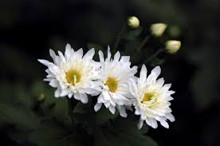

Hello

무궁화(無窮花, Hibiscus syriacus, Rose of Sharon)는 아욱과의 낙엽 활엽 관목으로, 높이 3~4m까지 자란다.
잎은 달걀 모양이나 마름모꼴로 가장자리에 톱니가 있거나톱니가 있거나 세 갈래로 갈라져 있으며 어긋난다.
7월부터 9월까지 넓은 종 모양의 꽃이 주로 새로운 가지의 잎겨드랑이에 하나씩 달려서 핀다.
대한민국에서는 관습헌법에 의해 국화(國花)로 여겨진다.[1]
중국·인도가 원산지로 알려졌으며, 세계 여러 곳에서 가꾸어지고 있다. 대한민국에서 주로 중부 이남에 분포한다.
무궁화의 한자는 無(없을 무), 窮(궁할 궁), 花(꽃 화)로, ‘궁핍없이 오래가는 꽃’으로 해석되며, 이는 궁핍한 생활 없이 풍족하고 행복하게 오래 살고자 하는 우리 민족의 바람이 담겨져 있다.